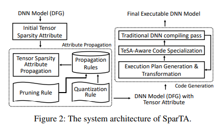
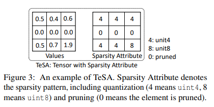
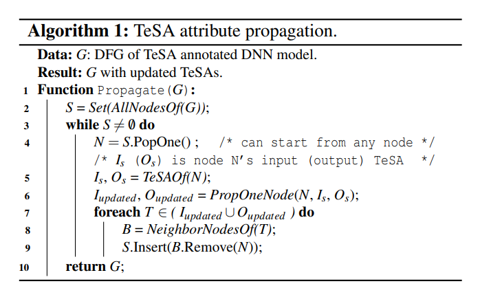
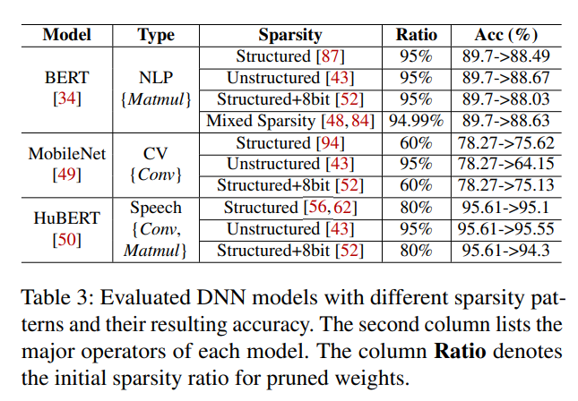

转眼间，我在 Microsoft Research Asia 的系统组实习也快半年了，这半年来感觉周围的同事们、Mentor 都还是很 nice 的。我们这个组最近的研究方向都是机器学习系统，以及大语言模型相关方向。在 Pub 方面，近几年的成绩也都是很好看的。因最近刚投完一篇工作，正处于空档期，恰好借此机会来读一读这个组之前在系统会议上的一些工作。
本文是该系列的第一篇，选择的文章是：SparTA: Deep-Learning Model Sparsity via Tensor-with-Sparsity-Attribute，发表于 OSDI’22。第一作者 Ningxin Zheng，是我实习时的 mentor。
Intro & Background & Motivation
当 DNN 变得越来越大、越来越复杂时，稀疏性也不可避免地随之出现。通常来说，模型稀疏性有以下例子：
- Quantization。比如把 fp16 压到 int8 或者更低精度。在 LLM topic 很热门的今天，LLM quantization 也非常火爆，我的很多同学都在做这个方向。
- Pruning。即把一些 tensors 的部分值设成 0（block-sparsity，即把一些 sub-block 设成 0；fine-grained sparsity，比如 channel-granularity sparsity，把某些 channel 全部设成 0）。
- Pruning 和 Quantization 相结合。
这两种技术都能把模型（在可接受的掉点范围下）压缩到一个可观的大小，并且再结合对于特定 sparsity pattern 的算子，inference 的延迟也会很低。然而问题是，现在的 DLSys 在稀疏性上还不够有效。现有的困难主要体现在以下方面：
- 一些算子还不够优。研究表明，cuSPARSE 的稀疏矩阵乘法即使在稀疏性 98% 时也不如 cuBLAS 的 dense 乘法优。究其原因，很大一个原因是现在的 generic 的稀疏 kernels 倾向于使用一些默认的 sparse pattern（比如 CSR），然而实际的 sparsity pattern 是多种多样的，比如 structured sparsity。这启发我们用一个足够通用的 DSL/抽象 去表达各种稀疏格式。
- DNN 计算通常分为不同阶段，而可能在不同阶段里的 sparsity pattern 是不一样的。比如两个稀疏格式不同的矩阵，相乘之后会出来更复杂的稀疏格式。这启发我们稀疏格式需要在计算图中 “传播”。
- 任何 sparsity-aware 的优化都可能需要改动整个栈，从前端（framework）到编译器、再到 kernels。因此 SparTA 是 end-to-end 的。
SparTA Design

SparTA 的结构如上图所示。其中的核心是 TeSA（Tensor-with-Sparsity-Attribute）抽象，它给现有的张量抽象加上了稀疏 attribute。
- 算法设计者可以给一个 DL 模型中某些指定的张量设置 “初始 TeSA”。
- 然后这些 TeSA 会自然在其中根据传播规则被传播（attribute propagation），直到模型中每个张量都有对应的 TeSA。
- 在传播结束后，SparTA 会执行一个编译过程，运用多种优化 passes 来生成高效的端到端的代码。相比传统的编译器，SparTA 额外多跑了两个 pass 来利用稀疏性：第一个 pass 将原来的 DNN execution plan 变成一个新的、能够利用给定 sparsity pattern 的 plan；第二个 pass 即生成代码（perform sparsity-aware code specialization）。
The TeSA Abstraction

如图所示，TeSA 其实就是给每个张量提供了一个 shape 和原张量一样的信息张量，对应位置表示该位置的稀疏属性（int4/pruned）。
Sparsity Attribute Propagation

其实就是按 DFG 来传播 TeSA，算法如图所示。一些要点：
- 这个过程可以从任何一个 node 开始。
- 对于每个节点，该算法会传播其所有 inputs、outputs 节点，具体行为在
PropOneNode函数中。这个函数会按照设定好的 propagation rule 来传播，并且这个 rule 是双向的。 - 当一个点的 inputs/outputs 更新完之后，会将其所有 neighbors 都放入队中（neighbors 包括 inputs/outputs）。所以这个算法其实是会不断重复执行的，每个 TeSA 也会被更新多次，直到收敛。对于 pruning 来讲，多次传播会导致所有该被 pruning 的部分都被 pruning（i.e.，并集）；对于 quantization，多次传播会导致 attribute 收敛到最小的 quant bits（甚至是 0-bit，即 pruned）。注意这个算法对于稀疏性来说是单调递增的，因此必然会收敛（算法可以终止）。
注意，这里有个很精妙的地方就是传播是双向的。从 input 传播到 output 我们很好理解，但设想如果 $W_1 \times W_2$ 时 $W_2$ 有些位置是稀疏的，那么其实 $W_1$ 有些地方也能被优化成稀疏的（先通过 $W_2$ 传播到 $W_1 \times W_2$，然后再反向传播回 $W_1$）。即存在 input-to-output，output-to-input 和 input-to-input 这些情况。
Intra-operator propagation. 不同 operator 的传播规则是不同的，这和它的本身计算关系有关。比如 element-wise 和 matmul 就是不同的两种。（其实就是像 AD 那样子干）
Pruning rule. 对于 element wise 的，如果是 unary，那么保持 pruned；如果是 binary，那么 “加性” 的算子只有两个都是 pruned，结果才是 pruned；”乘性”的算子有一个是稀疏的结果就是 pruned。
Quantization rule. 对于 quantization 来说，情况要更复杂一点，因为不能保证任意时刻降精度都是对的。因此这里文章借用了一种 “distill（知识蒸馏）” 的方法。首先使用 dataset 在没有 quant 的情况跑出标准数据，然后对于每个 operator，选择其中一个 tensor 不断降精度，直到模型准确率降低超过一个 threshold（这个是降低所有位置的还是只有一个位置？如果每个位置分别枚举，岂不是搜索量太大了？）
Code Generation with TeSA
Execution-plan transformation. 这个 Pass 会把一个带有复杂 sparsity pattern 的 tensor 变换为若干个简单（或者叫 regular） pattern tensor 的组合。在 SparTA 中，简单/regular pattern 被定义为只有一种 quantization bits，并且只有一种 block size 的 pruning。
为了帮助代码生成，变换后的 TeSA 会带有 bit width 和 block size 的信息（被称为 specialization hints）。
TeSA code specialization. 第二个 pass 给每个 operator 指定了 kernel code。比如，前面的 bit width 信息可以帮助我们确定是否使用一个特定的硬件指令（e.g. DP4A - dot4add_u8packed），以及代码的 loop tiling 也要和信息中的 block size 相对应。
这里要提到一个技术，就是因为我们是高效稀疏计算，所以必然需要高效的 DCE（Dead Code Elimination），即把 pruned 部分的计算代码看作是死代码消除掉。在实现上，他们首先用传统 DNN 编译器将算子当成 dense 的生成了一个多重循环，然后使用一个新的 scheduler primitive dismantle 来优化这个过程：它会 unroll 所有 loop，然后使用给定的 sparsity attribute 来消除死代码。
对于 quantization 来说也比较类似。SparTA 从最内层开始，先根据 bit-width 使用合适的硬件指令，比如 DP4A/wmma for 8bit，wmma for 4bit。这里的 tiling 还要和选定的指令对齐。
Evaluation
SparTA 在 “三个 popular 的 DNN 模型（BERT for NLP，MobileNet for CV，HuBERT for Speech）” 乘以 “四个不同的 sparsity patterns（Structured，Unstructured，Structured+8bit，以及 BERT 独占的 Mixed Sparsity）” 上做了测试，硬件涵盖了 CUDA（NVIDIA GeForce RTX 2080 Ti）、ROCm GPU（AMD Radeon VII）以及 Intel CPU（Intel Xeon Silver 4210 CPU）。

实验说明 SparTA 对比 baseline（PyTorch、TensorRT、TVM、Rammer，以及为后两者特别打造的 sparse 版本：TVM-S、Rammer-S），在 inference latency 和 memory usage 上都有很大的优化。
Other
SparTA 的代码已经在 GitHub 上开源：https://github.com/microsoft/SparTA